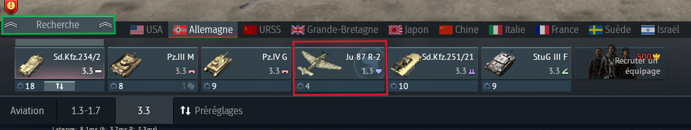
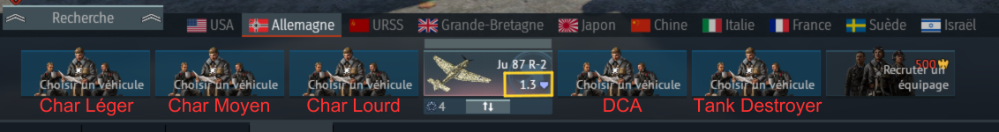

Bien gérer sa line-up sur War Thunder
Pour l'avion :

- Premièrement, choisir un emplacement d'équipage n'importe lequel, par exemple l'équipage n°4 encadré
ici en rouge
ensuite, vous mettrez tout vos avions sur cet équipage pour éviter de payer des
frais d'équipages sur vos équipages
char plus tard, par la suite pour changez d'avion sur votre
line-up il vous suffit d'aller dans le tech-tree
(encadrée en vert), sélectionnez votre avion et
faire "choisir un équipage".
Pour le char :

- Deuxièmement pour le char, nous gardons notre avion en position 4 vu précédemment, ensuite si l'on
veut on peut
désigner un équipage pour un certain type de véhicule (écrit en rouge), cela peut
varier en fonction de vos envies
mais surtout en fonction du Br (battle-rating) auquel vous
vous trouvez, car tout les types de char n'y seront
peut-être pas, car évidemment il faut
garder un Br (encadré en jaune) cohérent sans trop d'écart, gardant un
écart de 0.3, 0.7 ou au
maximum 1.0. Comme sur la 1ère image où les chars sont de mêmes Br.